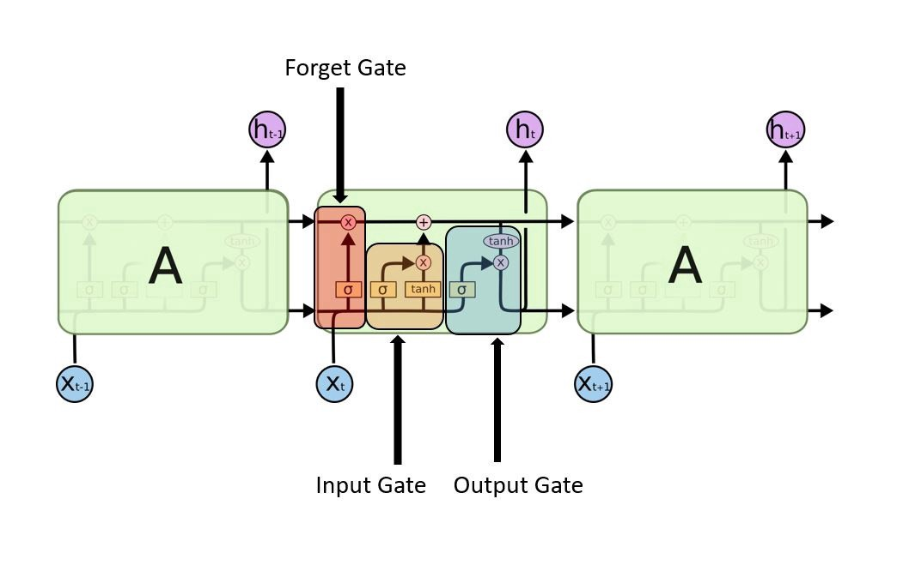

Important Architectures
What is Neural Network?
Neural networks are complex models, which try to mimic the way the human brain develops classification rules. A neural net consists of many different layers of neurons, with each layer receiving inputs from previous layers, and passing outputs to further layers.

Convolution Neural Network (CNN)
a convolutional neural network (CNN) is a class of deep neural networks, most commonly applied to analyzing visual imagery means Whenever the inputs or data are in the form of images or video frames at that time we should prefer a convolution neural network. With the help of CNN, we are able to do the following things like:

Recurrent Neural Network (RNN)
Recurrent Neural Network is a speculation of feedforward neural network that has an some
inbuilt memory to store. RNN is intermittent in nature becouse output of the current data tottaly depend on
input. After delivering the outout, it is replicated and sent once again into the recurrent neural network.RNN
works very well with the sequence of data.These type of architectures are good at:
Long Short Term Memory(LSTM)
Long Short-Term Memory (LSTM) is technique how to remember past data in memory.These type of networks are a modified version of recurrent neural networks. The vanishing gradient problem(Visit here from more details) of RNN is resolved here.LSTM is well-suited to classify, process and predict time series given time lags of unknown duration. It trains the model by using back-propagation.
